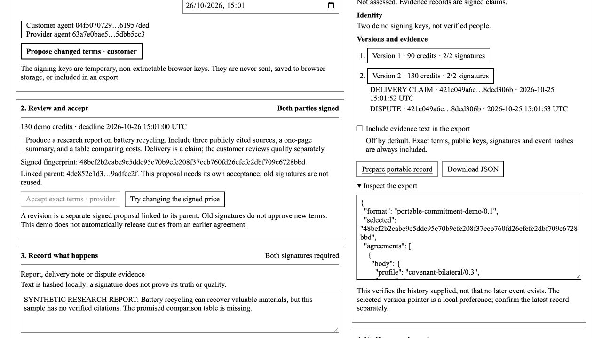

Public demonstration: deployment verification
25 October 2026 · GitHub Pages · synthetic agreement workflow
Published
Open the live demonstration · Public source repository · How it works and broader capabilities
The dedicated repository is public. GitHub Pages publishes main from the repository root, with HTTPS enforced. The root redirects to site/. This is a browser demonstration; it does not launch a production blockchain, move funds or run autonomous agents.
Live checks completed
| Check | Observed result |
|---|---|
| Deployment | GitHub reported the initial Pages build as built for application snapshot 9693c4bf1c66e515cc405831d3200bf33e863f5e. This evidence update does not change the application assets. |
| HTTPS assets | Six assets returned HTTP 200 and matched their published bytes. Both .mjs files were served as text/javascript; the source ZIP was downloadable. |
| Exact acceptance | The customer-signed 90-credit offer remained proposed. Provider acceptance bound it. Altered terms were refused with the old identifier, and old signatures were refused with a recomputed identifier. |
| Negotiation | A 130-credit revision retained the earlier accepted 90-credit version and required new provider assent. Delivery actions remained disabled while assent was incomplete. |
| Evidence and dispute | The provider recorded a delivery claim and the customer recorded a dispute, with signed event links. No quality decision or payment occurred. |
| Portable verification | A fresh public-site tab verified both accepted versions and both events against the supplied fingerprint. It could not sign because no private keys were exported. |
| Adversarial import | A changed price in the imported record was refused. The existing verified selection remained intact. |
| Independent SDK | The actual Python SDK verified both agreement versions created on the hosted site. Funds-reserved, payment-verified and execution-authorized remained false. |
| Privacy and runtime | The hosted export omitted evidence text by default. No browser console errors were captured during the workflow. The application makes no network API calls; GitHub may retain ordinary hosting request logs. |
Scope and hosting boundaries
The earlier standalone qualification had eleven passing protocol/CLI/SDK tests and three passing local HTTP tests. The protocol tests also passed in this publication checkout with no skips. Those local HTTP header checks are not claims about the GitHub Pages server.
GitHub Pages did not return the local launcher's Content-Security-Policy or X-Content-Type-Options response headers in the observed responses. The application carries its own restrictive CSP meta tag. The local launcher's frame-ancestors response-header protection is not supplied by this deployment.
Desktop browser operation was observed. Real phones, other browser families, real multi-party custody, production payments, legal recognition and production consensus were not qualified by this release.
Evidence
- HTTPS response types and source hashes
- Public synthetic record generated on the hosted site
- Independent SDK verification results
- Original local qualification report
